Костанай
Костанай — это город, располагающийся в Казахстане. Он является центром одноименной области. Географически он расположен в Зауралье, на окраине Западной Сибири. До конца девяностых годов в нашей стране город называли Кустанай, аналогично урочищу, на котором тогда еще небольшое поселение было заложено близ речки Тобол. Изначально назывался Николаевском.
Город расположился в зоне степей, в северной части Тургайского плато, на речке Тобол, в пятисот семидесяти километрах от столицы. Наиболее приближенным географически городом с населением более одного миллиона является Челябинск, который располагается на расстоянии в двести шестьдесят километров по северо-западному направлению
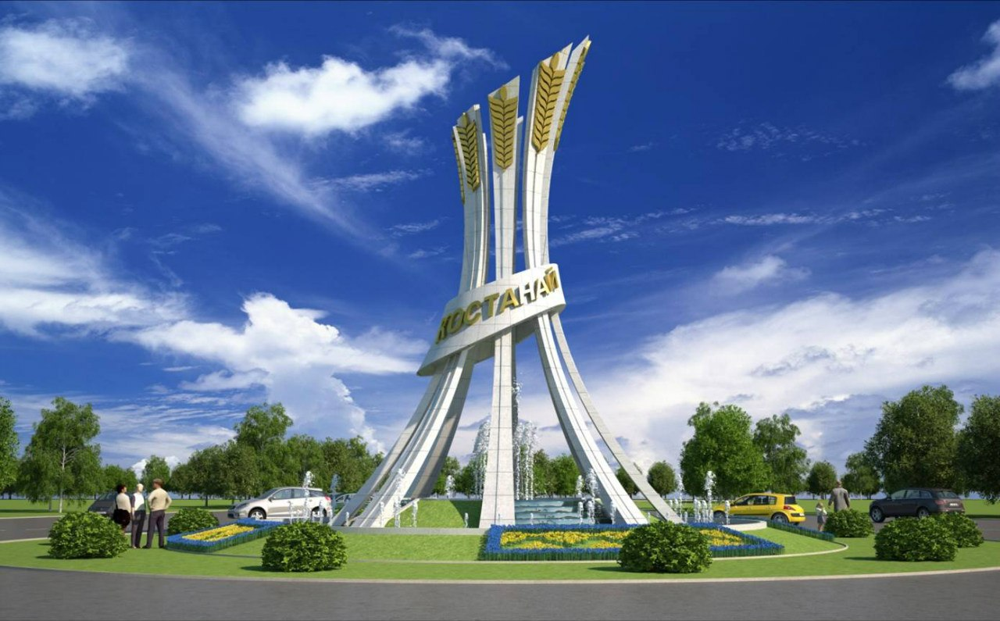 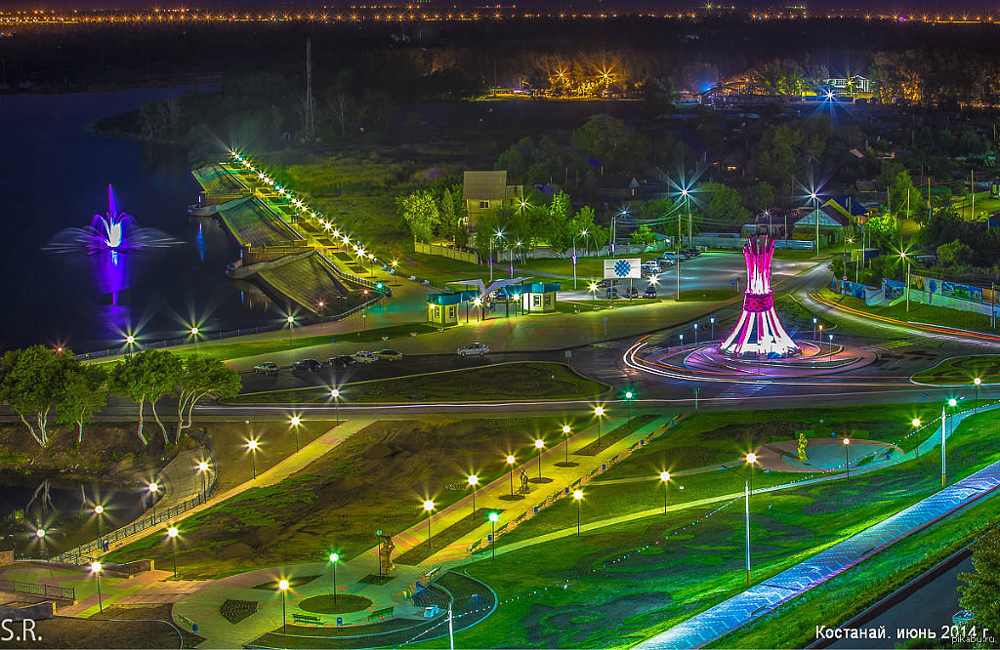
Здесь казаны
Здесь указаны места в Костанае куда стои поити:
Тургайское плато
Бурабай — климато-кумысолечебный курорт с 1910 года в Акмолинской области Казахстана. Входит в состав Тургайское платонаходится на северо-западе Казахстана, между Южным Уралом, Казахским мелкосопочником и Мугоджарами, на территории Костанайской области. Ширина плато составляет около 600 километров, длина около 200 километров.
Суровая зима и знойное лето, это отличительные особенности Тургайского плато. Это место славится крупными месторождениями железных руд и многих других полезных ископаемых.На территории Тургайского плато находится множество неглубоких живописных озер, наибольшее из которых- озеро Кушмурун. Озера богаты рыбой, а значит, каждый турист сможет заняться ловлей леща, окуня и сазана. По оси плато располагается Тургайская ложбина, где протекает река Тургай, которая широко известна изобилием рыбы.
Приятный отдых и рыбалка ждут любого туриста, желающего скоротать свой отдых на Тургайском плато в Казахстане.
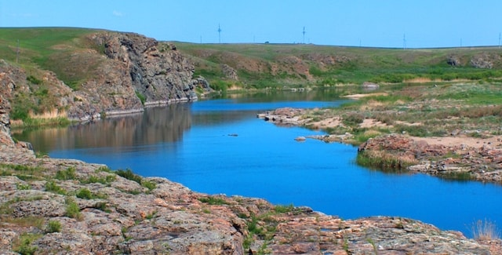 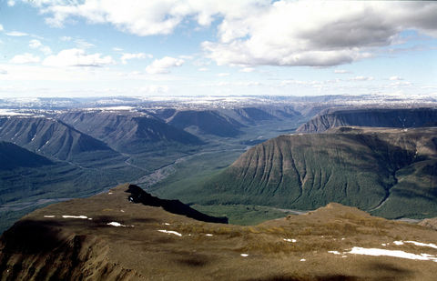
Здесь уfdssssssssssssssssssssssssssssssssssssssssssssssssssssssssssssssssssssssssказаны
Парк Победы
Костанайский Парк Победы находится на территории бывшего городского православного кладбища. Оно было действующим с конца 19 века по 1949 год. Здесь же, в братских могилах, покоится прах погибших в годы Гражданской войны, а также участников Великой Отечественной войны, умерших в госпиталях, погибших в авиакатастрофах курсантов и пилотов Сталинградского во¬ен¬но-авиационного училища, размещавшегося в годы войны в Кустанае.
В 1949 году городские власти приказали закрыть кладбище для захоронений, а в 1965-м на этом месте началось строительство парка. Через год по проекту местных скульпторов братьев Белоусовых в парке начали возводить памятник-ме¬мо¬риал. Это стена Памяти с фамилиями костанайцев, погибших в годы Великой Отечественной. Была создана аллея Героев. В 1968 году мемориал был торжественно открыт. В этот же день был зажжен Вечный огонь.
В 2004-2005 годах Парк Победы реконструировали. На алее Героев установили обелиски Героям Советского Союза и полным Кавалерам Орденов Славы.
В 2006 году там был установлен новый памятник – Жертвам политических репрессий 20-го века. Ещё через год – монумент Воинам-ин¬тер¬на¬цио¬на¬лис¬там. В 2009-м – Жертвам радиации. В прошлом году установлен обелиск – Защитникам Отечества и труженикам тыла от благодарных потомков.
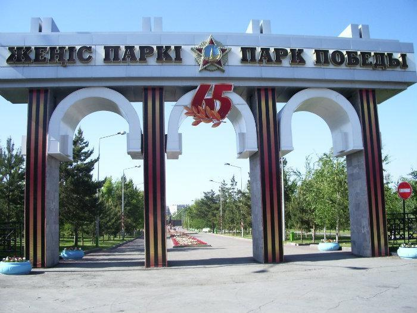 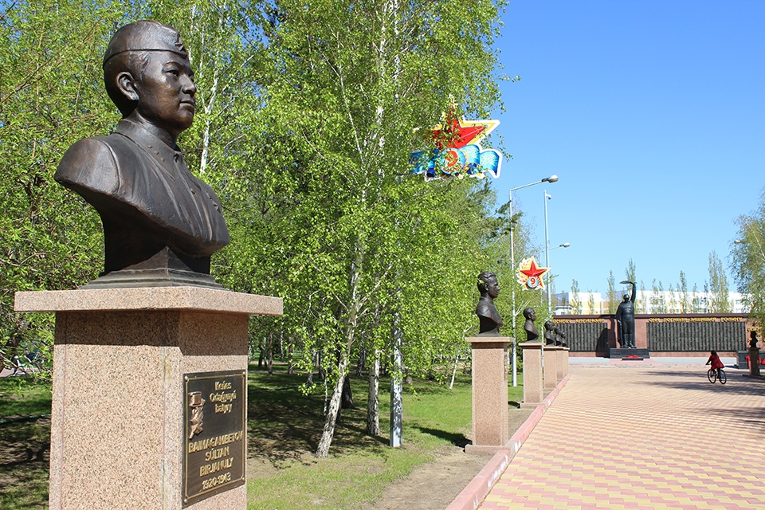
Здесь уfdssssssssssssssssssssssssssssssssssssssssssssssssssssssssssssказаны
Наурзумский государственный природный заповедник
Для сохранения в естественном виде животного и растительного мира Северного Казахстана, в 1931 году открылся Наурзумский государственный природный заповедник.
Площадь его территории насчитывает 191 381 гектар, и состоит из трех, расположенных друг от друга, участков. Каждый из них имеет свое название и характерные особенности.
Наурзум (139 714 гектара), участок, расположенный в центральной части заповедника, включает в себя бор Наурзум-Карагай, степные участки и озера
Терсек (12 947 гектаров) — раскинулся на северо-западе заповедника, бор Терсек-Карагай и участки степной зоны являются его украшением
Сыпсын (38 720 гектаров) — западный участок с лесной зоной и степными участками.
Характерными для этого региона являются темно-каштановые почвы и их степные разновидности. Богатая природа степных участков представлена шестью группами растительности: болотной, кустарниковой, степной, луговой, пустынной и лесной. Здесь есть все условия для произрастания этих растений.
Кроме разнообразнейшего растительного мира, здесь обитает 44 вида млекопитающих и 282 вида птиц. В озерах и болотах живут более 10 видов рыб и 6 видов земноводных животных. Двадцати видам, обитающих здесь животных, грозит вымирание. Они были внесены в Красную книгу СССР.
В 2008 году Наурзумский государственный заповедник включен в Список всемирного наследия ЮНЕСКО. Эти природные территории признаны уникальными.
Это вдохновило Министерство охраны окружающей среды Казахстана на разработку Комплексной программы, направленной на сохранение природных территорий «Сары-Арка — степи и озера Северного Казахстана». Отныне эти территории будут по охраной государства.
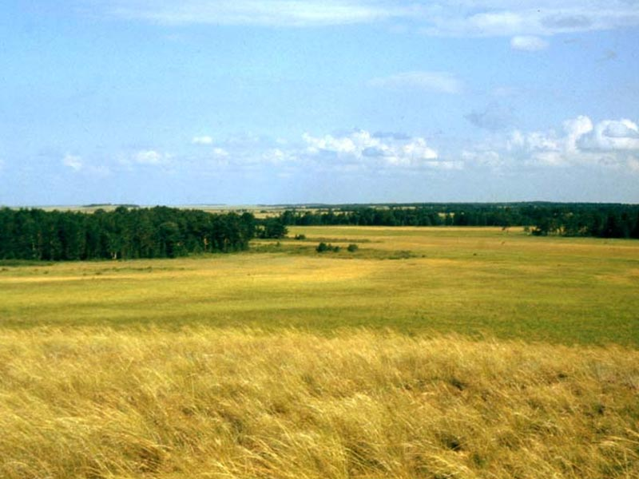 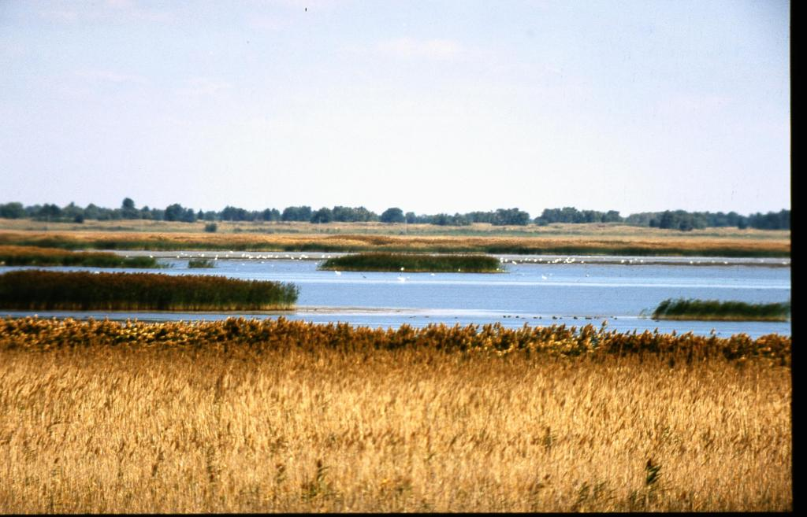
Здесь указаны
Кафедральный Константино-Еленинский Собор
Кафедральный Константино-Еленинский собор является главным храмом Костанайской и Рудненской епархии. Строительство его началось в 2002 году, закончилось в 2005. Возведение стало возможным, благодаря помощи индивидуальных предпринимателей, прихожан и государства. Автор мозаики над главным входом в храм – известный костанайский художник Георгий Михайлович Соков. 24 июля 2003 г. Указом Святейшего Патриарха Московского и всея Руси Алексия II храму был присвоен статут собора. Архиепископ Уральский и Гурьевский Антоний освятил собор 16 мая 2004 г. Проектная вместимость собора 400 - 450 человек. Высота колокольни с луковицей составляет 25 метров. Первым настоятелем собора до 16 ноября 2008 года был протоиерей Виктор Петров. Константино-Еленинский собор - одна из достопримечательностей города. Службы в соборе совершаются ежедневно. При соборе работают церковная библиотека и воскресная школа для детей.
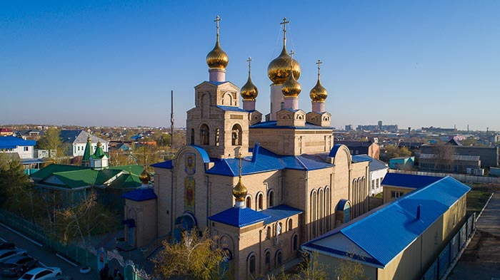 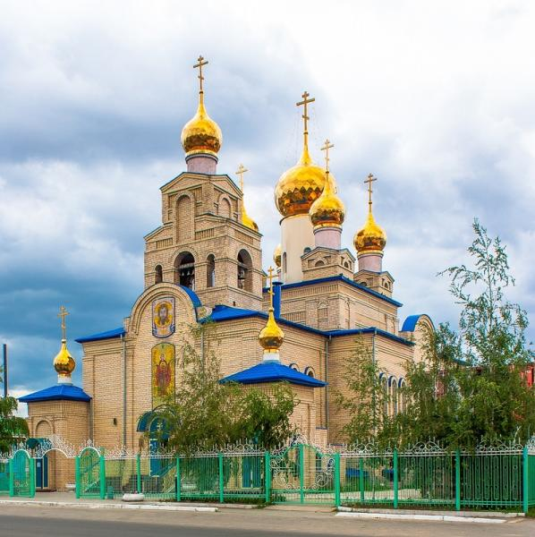
Здесь указаasdddddddddddddddddddddddddddddddddddddddddddddddddddddddddddddddddddddddddddddны
Дворец спорта
Дворец спора (Ледовый дворец) предлагает 3 раза в неделю, а также в праздничные дни для детей и взрослых катание по зеркальной глади льда. Работают секции: Хоккей с шайбой, Шорт-трек, Фигурное катание.
Проводятся турниры по хоккею с шайбой, различные спортивные мероприятия с использованием покрытия: чемпионаты Казахстана по волейболу, гандболу, баскет¬болу, бальным танцам.
Каждый год приезжают со своими выступлениями звез¬ды российской и казахстан¬ской эстрады, балет на льду, цирк.
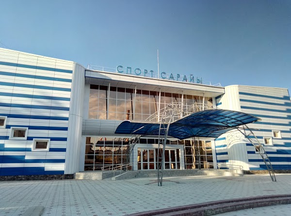 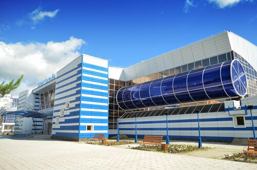